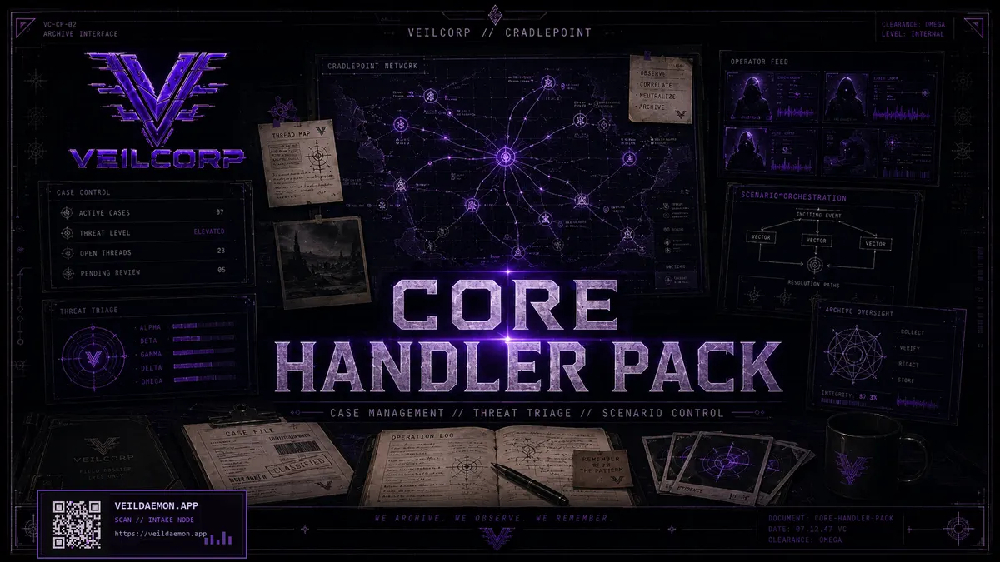
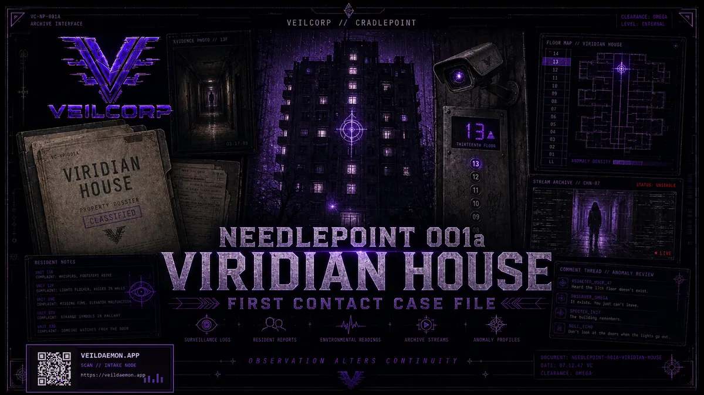
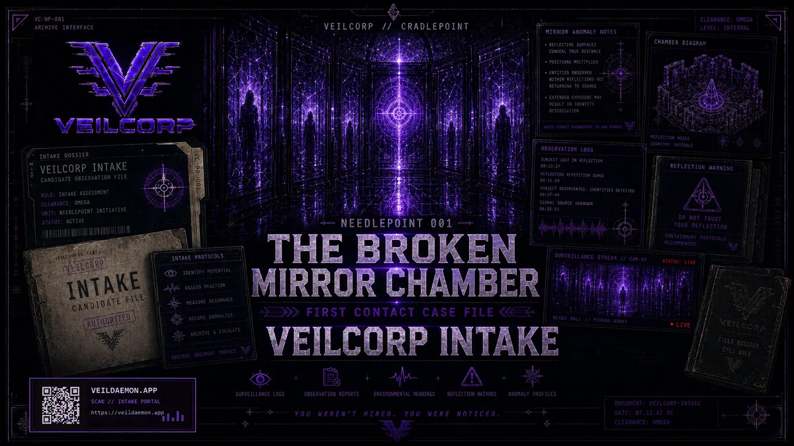

Direct independent
Digital PDFs and print-on-demand preserve control, rights, customer learning, and incremental release speed. Studio carries edit, layout, art direction, and discoverability.
Publishing
Professional publishing finishes and distributes a line that already has free onboarding, paid cores, modules, software, and a release pipeline—not a concept deck inventing a first product.
Current release inventory



Public catalog also tracks 25 current final release PDFs and multi-book manuscripts. Storefront listings supersede this page when counts change.
Near-term engine
Not every customer completes every step. The sequence is the design of the commercial surface—not a guaranteed conversion promise.
Three routes
Digital PDFs and print-on-demand preserve control, rights, customer learning, and incremental release speed. Studio carries edit, layout, art direction, and discoverability.
A campaign can fund editing, layout, art, proofs, manufacturing, fulfillment preparation, and a defined launch cohort. Gross pledges are not profit.
Advance or contribution may trade margin and some control for production, retail reach, marketing, or operational load reduction. Rights floors apply.
What professional funding unlocks
Flagship line edited, laid out, and accessibility-checked for market release.
Commissioned covers and campaign materials replace prototype art.
Weekly production cadence with a monthly public release target for Needlepoints and expansions—documented, not a promise of one finished commercial module every week.
Print stock, conventions, review copies, creator outreach.
Decision gates
Editorial scope, contractor quotes, launch plan, free→paid path instrumented.
Print-ready scope, supplier and fulfillment quotes, prelaunch threshold, shipping policy, contingency.
Rights floor, economics, operational contribution, distribution evidence, reversion protection.
Repeat sales, contribution margin, acquisition evidence, sustained cadence.